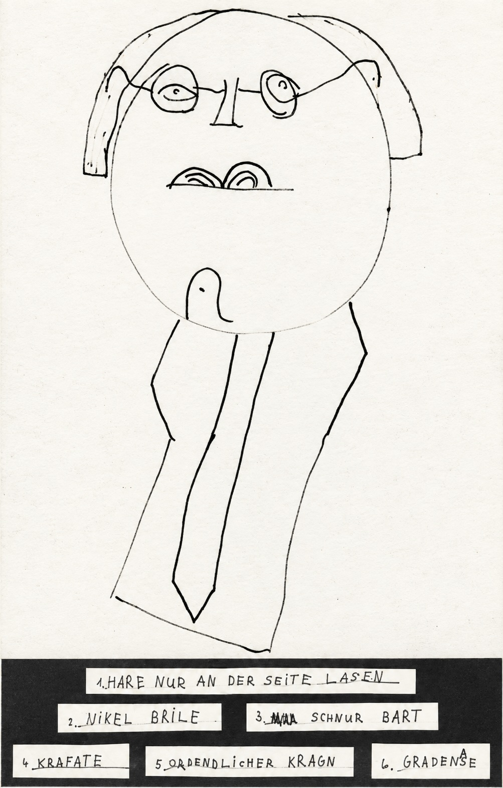

Werner Havers lernte ich kennen, als ich noch in Marburg tätig war. Dort war ich aus mehreren Gründen unglücklich. Die Kinderklinik war für meine berufliche Weiterentwicklung zu beschränkt. Insbesondere war der Bereich Onkologie viel zu klein. Mein Labor befand sich weiterhin in Heidelberg, und nach dem Scheitern der DFG-Forschergruppe gab es in Marburg weder für das Labor noch für meine Mitarbeiter eine Perspektive. Hinzu kam für mich die zwischen mir und Hannsjörg Seyberth vergiftete Atmosphäre. Ich wollte deshalb nicht nur weg aus Marburg, sondern auch den nächsten beruflichen Schritt machen.
Nach verschiedenen Bewerbungen lud mich Werner Havers, Leiter der pädiatrischen Onkologie an der Universitätsmedizin Essen, zu einem Vorstellungsgespräch ein. Das Gespräch verlief ausgesprochen angenehm, und schließlich nahm ich sein Angebot an, als Oberarzt an die Essener Kinderklinik zu wechseln. Essen war damals bereits eines der größten kinderonkologischen Zentren in Deutschland. Dort konnte ich klinisch noch viel lernen und gleichzeitig meine wissenschaftliche Arbeit fortsetzen. Beides zusammen war genau das, was ich suchte.
Ganz selbstlos war Havers dabei natürlich nicht. In Essen gab es zwar ein Labor, doch es war altmodisch und für moderne pädiatrisch-onkologische Forschung kaum geeignet. Havers verfügte jedoch über beträchtliche Drittmittel, die in absehbarer Zeit eingesetzt werden mussten. Damit konnte das Labor renoviert, mit modernen Geräten ausgestattet und auf eine zeitgemäße wissenschaftliche Grundlage gestellt werden. Ich sollte diesen Aufbau übernehmen und konnte dafür meine Mitarbeiter und meine Forschung aus Heidelberg nach Essen holen.
Zu diesem Plan gehörte auch Angelika Eggert, von der später noch ausführlicher die Rede sein wird. Havers hatte sie mit einem Stipendium in die USA geschickt, an das renommierte Children’s Hospital in Philadelphia. Nach ihrer Rückkehr sollte sie in Essen eine wissenschaftliche und klinische Perspektive erhalten. Havers wusste zugleich, dass Essen für mich nicht die Endstation sein sollte. Mein Ziel war bereits damals, Chefarzt einer Universitätskinderklinik zu werden.
Der Deal war deshalb für beide Seiten vernünftig. Ich erhielt ein modernes Labor, eine neue Heimat für meine Arbeitsgruppe und die Möglichkeit, mich an einem großen kinderonkologischen Zentrum weiterzuqualifizieren. Wenn ich einige Jahre später den nächsten Karriereschritt machte, konnte Angelika Eggert in ein aufgebautes Labor zurückkehren und ihre eigene wissenschaftliche und oberärztliche Laufbahn fortsetzen. Dass sie mich eines Tages beerben könnte, lag in der Luft, wurde aber nicht ausdrücklich ausgesprochen. Ich fand diese Abmachung offen und fair.
Werner Havers gehörte zu den integersten Persönlichkeiten, die ich während meines Berufslebens kennengelernt habe. Sein eigener Einstieg in die pädiatrische Onkologie war allerdings eher bescheiden und, wie ich später erfuhr, nicht ganz freiwillig. Als er in den 1970er Jahren in Essen Oberarzt wurde, galt dieses Gebiet keineswegs als Sprungbrett für eine große Karriere. Die Behandlung der Kinder war häufig eine trostlose Angelegenheit. Man versuchte, eine Remission zu erreichen, wusste aber zugleich, dass viele der Kinder einen Rückfall erleiden und sterben würden. Ein erheblicher Teil der Arbeit bestand darin, die Kinder und ihre Eltern auf diesem Weg zu begleiten.
Auch die Forschung steckte damals noch in den Anfängen. Man kombinierte verschiedene Chemotherapeutika und beobachtete, welche Ergebnisse damit erzielt wurden. Die Behandlung war weitgehend empirisch. Manche Kinder kamen in Remission, einige wurden sogar geheilt, doch von den biologischen Vorgängen, die man mit der Therapie auslöste, verstand man noch vergleichsweise wenig. Grundlagenforschung, wie wir sie später betrieben, spielte in der klinischen Kinderonkologie kaum eine Rolle.
Der damalige Leiter der Kinderklinik hielt Werner Havers offenbar für den richtigen Mann für diese Aufgabe. Er war geschickt, eloquent und konnte Menschen überzeugen. Dass diese Einschätzung richtig war, habe ich später selbst erfahren. Von Havers lernte ich, Entscheidungen gründlich vorzubereiten, sie mit den Mitarbeitern abzustimmen und sie anschließend auch durchzusetzen. Anders als ich es in Marburg erlebt hatte, waren seine Entscheidungen nachvollziehbar. Das trug erheblich zu der guten Arbeitsatmosphäre in seiner Abteilung bei.
Eine weitere Eigenschaft habe ich mir ebenfalls von ihm abgeschaut. Havers versuchte nicht, jedes Problem mit einem einzigen großen Entwurf zu lösen. Er ging Schritt für Schritt vor und konzentrierte sich jeweils vollständig auf das, was als Nächstes zu tun war. Das wirkte gelegentlich weniger spektakulär, führte aber zuverlässig zum Ziel. Rückschläge, wie sie bei der Suche nach der ganz großen Lösung leicht entstehen, vermied er auf diese Weise.
Auch im persönlichen Umgang war Havers berechenbar. Er hatte eine feste Meinung und äußerte sie bisweilen mit der Deutlichkeit, die man im Ruhrgebiet nicht ungewöhnlich fand. Man war keineswegs immer einer Meinung mit ihm, wusste aber, woran man war. Vor allem war er gerecht. Wir blieben während meiner gesamten Zeit in Essen beim Sie. Auch das habe ich später beibehalten, weil Nähe und Vertraulichkeit zwischen einem Vorgesetzten und seinen Mitarbeitern leicht missverstanden werden können.

Havers war kein typischer Grundlagenwissenschaftler. Er war ein Macher, der Projekte in überschaubaren Schritten verwirklichte. Später ließ er die pädiatrisch-onkologische Station neu bauen; die Ambulanz war, soweit ich mich erinnere, bereits zuvor modernisiert worden. Dabei saß er nicht auf einem hohen Ross. Von den Spenden und Drittmitteln, die er einwarb, profitierten gelegentlich auch andere Bereiche. Wenn in seiner Abteilung umgebaut wurde, dachte er die Nachbarn mit und ließ bisweilen auch dort etwas verbessern.
Vielleicht war das einer der Gründe, weshalb die Zusammenarbeit innerhalb der Essener Kinderklinik so gut funktionierte. Es gab vier größere Bereiche: die pädiatrische Onkologie unter Havers, die Nephrologie, die Kardiologie sowie die Neonatologie, die damals mit der Neurologie verbunden war. Die vier Leiter verstanden sich miteinander, und es gab kaum das Gezänke, das ich aus anderen Kliniken kannte. Auch die Besprechungen verliefen anders als in Heidelberg, wo ich sie häufig als unsäglich empfunden hatte. In Essen waren sie produktiv und am jeweiligen Problem orientiert.
Mit Havers ging ich von Anfang an offen um. Er wusste, dass ich mich auf Chefarztstellen und Ordinariate bewarb, und unterstützte mich dabei, soweit er konnte. Die Bewerbungen und Vorstellungsgespräche organisierte ich allerdings weitgehend selbst; gelegentlich gab er mir einen Rat. Als er später Dekan wurde, konnte ich ihm umgekehrt einiges über Berufungsverfahren berichten. Er selbst hatte solche Verfahren nie von der Bewerberseite erlebt.
Havers wurde später Ärztlicher Direktor des Essener Klinikums und Dekan der Medizinischen Fakultät. Dass man ihm diese Ämter anvertraute, hing sicherlich mit seiner fachlichen Leistung zusammen, vor allem aber mit seiner Anerkennung als gerechter und integrer Persönlichkeit. Auch für die Kinderklinik konnte er in diesen Funktionen viel erreichen. Mit Angelika Eggert und mir gelang es ihm schließlich, zwei seiner Mitarbeiter auf Ordinariate zu bringen. Das war keineswegs selbstverständlich.
Nicht zuletzt wegen Werner Havers wurden die fünf Jahre, die ich in Essen verbrachte, persönlich wie beruflich zu einer erfolgreichen Zeit. Im Rückblick war er vielleicht der Mensch, der mich in meinem späteren beruflichen Handeln am stärksten geprägt hat. Vieles von dem, was ich als Chefarzt über Entscheidungen, Verlässlichkeit und den Umgang mit Mitarbeitern für richtig hielt, hatte ich mir bei ihm abgeschaut.